每日會客時間:上午8點至12點,下午2點至晚上9點
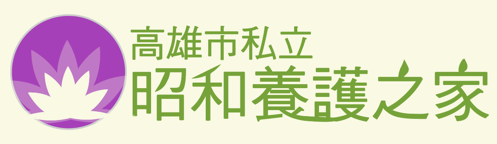
關於昭和
組織結構
工作常規
地理位置
服務內容
照護理念
收費標準
長期安養
短期臨托
自費項目
收費方式
活動花絮
補助資訊
聯絡我們
活動照片
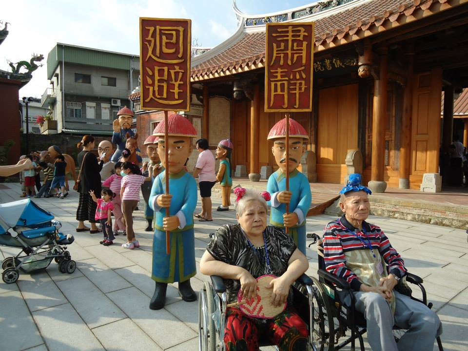 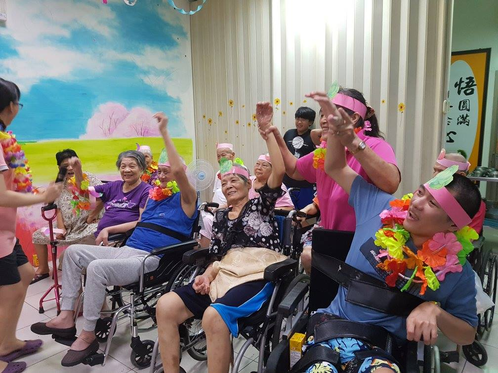 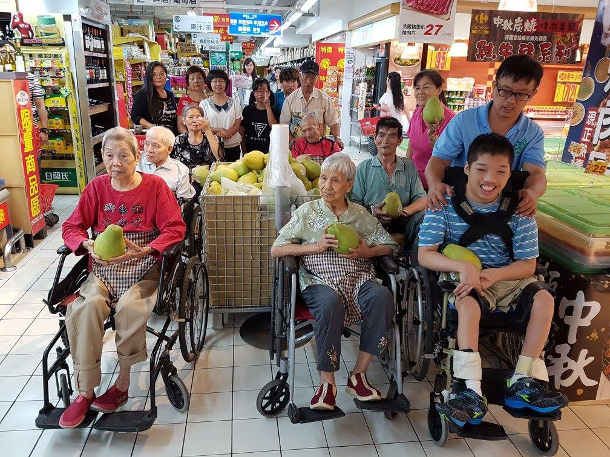 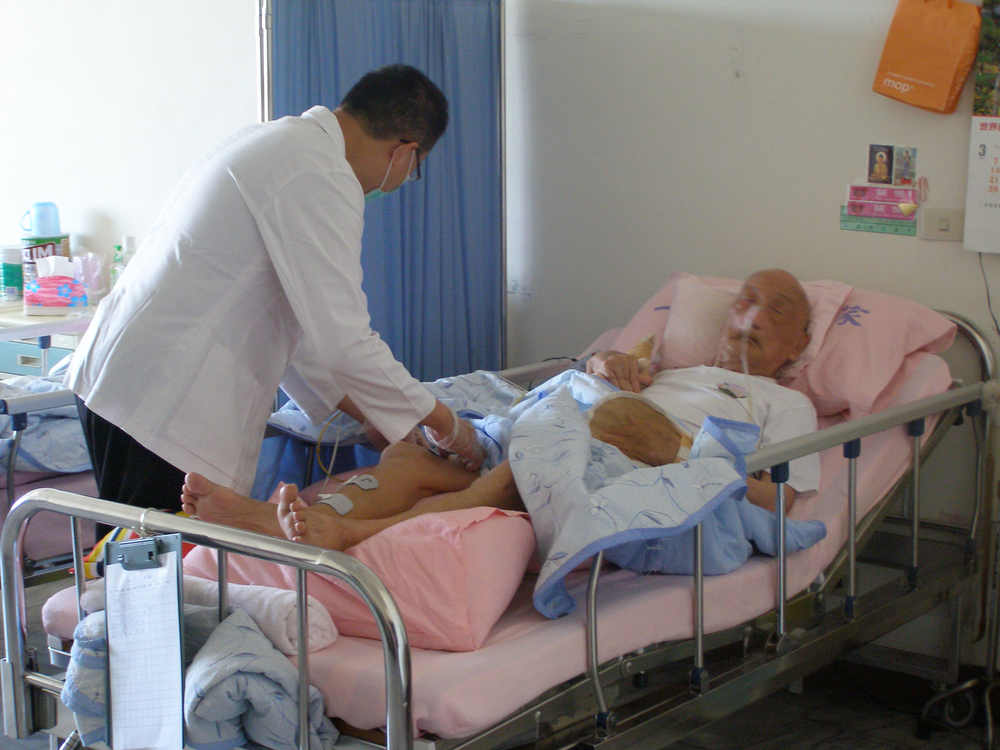 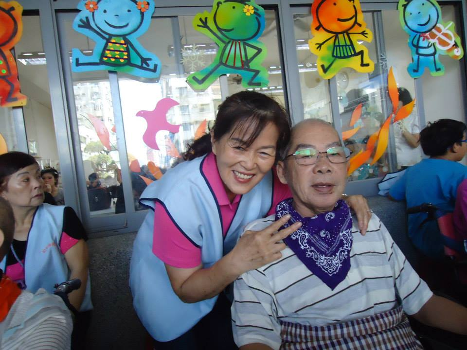 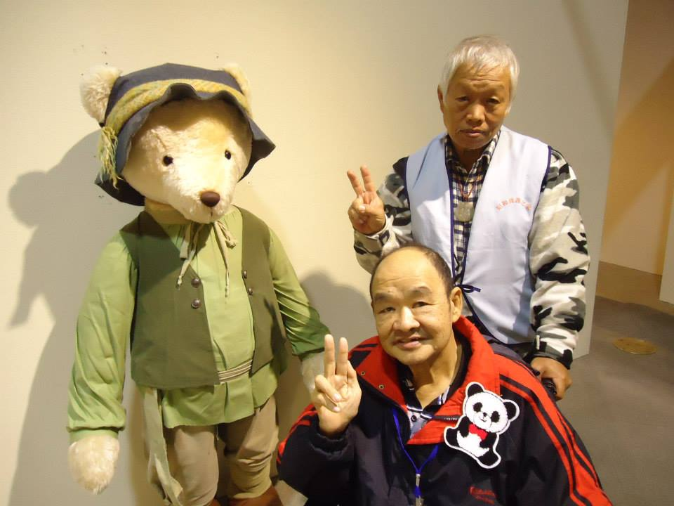 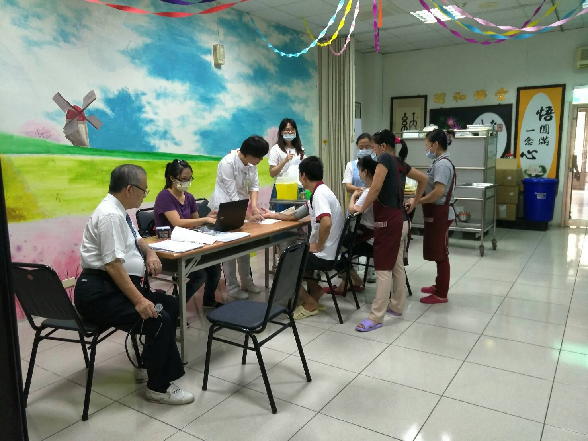 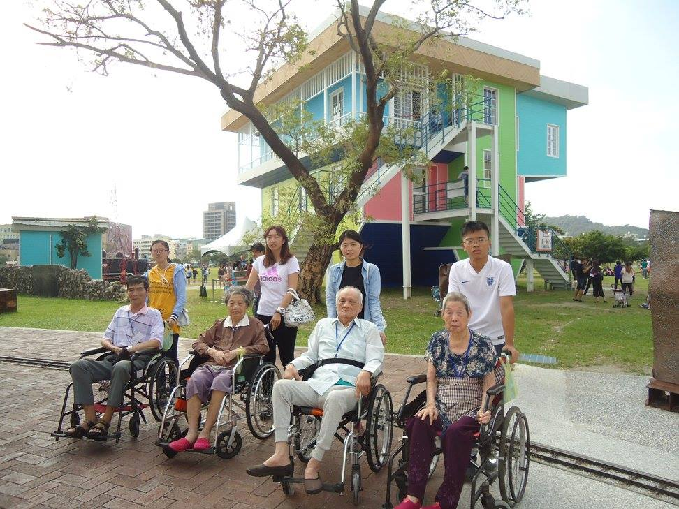 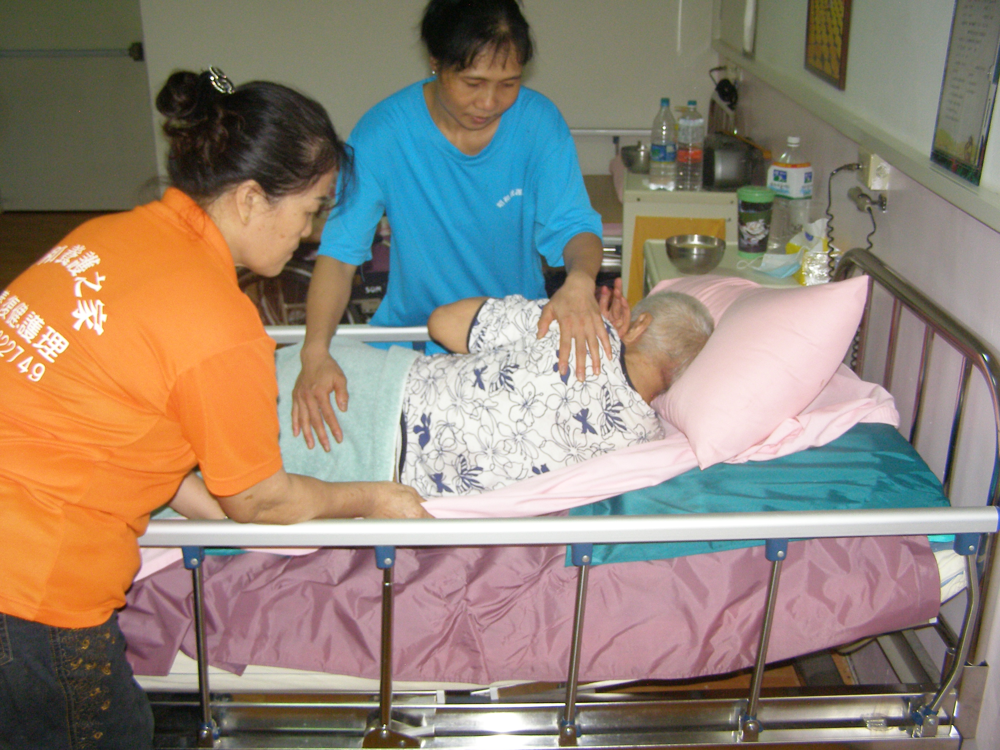
相關網站
祐生醫院
一祥居家護理所
博登藥局
高照星皮膚科
首頁/關於昭和
熱門消息
恭賀!昭和養護之家榮獲106年
評鑑甲...
more
本機構特別於11/03於一樓交誼
廳舉辦...
more
慈濟團體前來機構與住民唱歌
同樂...
more
組織結構
|
Introduction
機構組織架構圖:
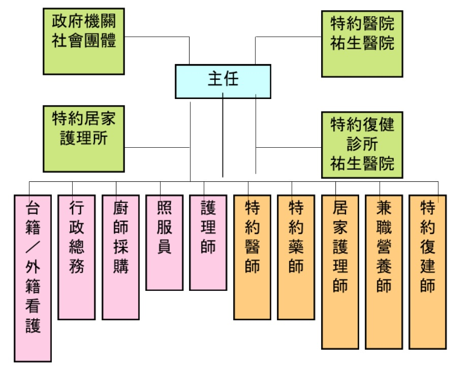
服務時間:全年無休，提供24小時照護 每日會客時間：上午8點至12點，下午2點至晚上9點
服務專線：03-3222749 設計者翁鈺雯 高雄市私立昭和安養護之家 版權所有 轉載必究!